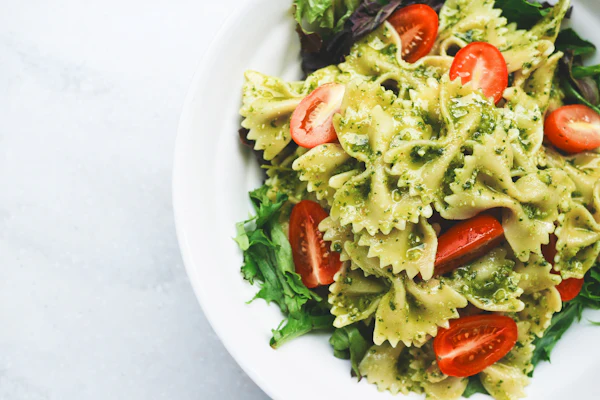

Penne al ragù
Rinderragout, San-Marzano-Tomaten, Parmigiano
14,50
Frisch gemacht, jeden Morgen. Dazu Weine aus kleinen Familienbetrieben – und ein Abend, den man nicht vergisst.
Rinderragout, San-Marzano-Tomaten, Parmigiano
14,50
Fior di latte, Basilikum, Steinofen
12,00
Pesto genovese, Kirschtomaten, Rucola
15,90
Was als kleine Küche mit sechs Tischen begann, ist heute ein Treffpunkt für alle, die gutes Essen und lange Gespräche lieben. Die Rezepte sind dieselben geblieben.
„Kochen ist Liebe, die man schmecken kann.“
Online in einer Minute – oder ruf uns einfach an.
Jetzt reservieren